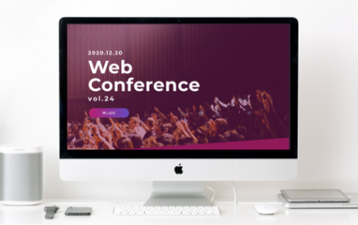

Webサイト制作
新規サイトはもちろん、サイトリニューアルやランディングページ制作も承っております。
サイトのゴールはお客様の夢や目的を実現することです。そのためにまずはしっかりとお話をうかがい、サイトに必要な要素を洗い出します。その後、ワイヤーフレーム（サイトのレイアウト）の作成、デザインの制作、コーディングと進みます。制作の過程でお客様とのお打ち合わせを数回実施させていただき、ご要望とご意見を反映しながらサイトを制作していきます。
Webサイト運用
サイトの更新作業や独自のアクセス解析に基づいたサイト改善のご提案が可能です。
日々の面倒な更新作業は私たちにおまかせください。テキストの修正やリンクの張り替えなどの簡単な作業から、特集ページやバナーのデザインまで可能です。
また、アクセス解析によるサイト改善も承っております。ご購入やお申込数などにお悩みでしたらぜひご相談ください。サイトの課題を発見し、改善案のご提案から実装までワンストップで対応いたします。

アプリ開発
スマートフォンアプリの開発の他、Vue.jsやReactによるWebアプリの開発が可能です。開発力のみならず、充実したユーザー体験をもたらすためのUXデザインにも自信があります。作って終わり、ではなくユーザーに愛されるUI(ユーザーインターフェース)を実現し、アプリ開発によるお客様の事業の目的を達成する推進力となることを目指します。
CONTACT
お問い合わせ
Webサイトの制作のご依頼やお見積もりなど、お気軽にご相談ください。